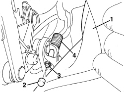
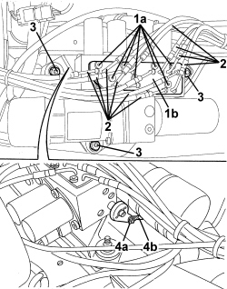
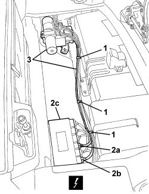

7030H58 AUTOMATIC HOOD HYDRAULIC ACTIVATING SYSTEM MOTOR/PUMP ASSEMBLY - R.R.
- Path
- Procedures > 70 FITTINGS > 7030 SUN ROOF/GLASS PANEL > 7030H AUTOMATICALLY OPERATED HOOD > 7030H58 AUTOMATIC HOOD HYDRAULIC ACTIVATING SYSTEM MOTOR/PUMP ASSEMBLY - R.R.
- Kind
- repair procedure (removal / refitting; the operation number is the code)
- Applies to
- engines: 2.2 JTS, 3.2 JTS; all production periods
- Interactive page
- https://sloeber94.github.io/elrnDB-aBrrSpdr/en/#/946004102
Applies to: engines: 2.2 JTS, 3.2 JTS; all production periods
 Removing
Removing
 Refitting
Refitting- Prepare the hood for the operation and discharge the hydraulic system pressure.
Op. 0010T79 HOOD HYDRAULIC SYSTEM - DISCHARGE AND RESTORE PRESSURE
Op. 7040C11 HOOD HOUSING COMPARTMENT FLOOR TRIM - R.R.
1. Remove the hydraulic control unit sound insulation cover.

Applies to: engines: 2.2 JTS, 3.2 JTS; all production periods
Removing
Refitting- Prepare the hood for the procedure.
Op. 0010T79 HOOD HYDRAULIC SYSTEM - DISCHARGE AND RESTORE PRESSURE
- Open the front part of the hood, until the spring pad is accessible.
1. Gently move the edge of the inner hood lining.
2. Remove the rubber protection from the nut.
3. Undo the nut.
4. Remove the spring pad.

Applies to: engines: 2.2 JTS, 3.2 JTS; all production periods
1. Working on the hydraulic control unit, undo the bolts (1a) and remove the plate (1b) in the direction of the arrow to release the pipes.
2. Disconnect all the pipes from the hydraulic control unit.
3. Undo the hydraulic control unit fixing nuts.
4. Release the retaining clip (4a) and disconnect the hydraulic system pressure release cable (4b).

Applies to: engines: 2.2 JTS, 3.2 JTS; all production periods
1. Open the wiring and pipe retaining bands.
2. Disconnect the electrical connections (2a and 2b) from the electronic control unit (2c).
Description | Component |
|---|---|
HOOD CONTROL UNIT |
3. Remove the hydraulic control unit and wiring.

Applies to: engines: 2.2 JTS, 3.2 JTS; all production periods
Refitting
Removing- Check that the spring pad is not damaged.
- Fit the spring pad in the housing.
- Screw in the nut.
- Fit the rubber protection on the nut.
- Position the edge of the hood inner lining.
- If discharged, restore the hood hydraulic system pressure.
Op. 7030H30 END OF TRAVEL BUFFER BRACKET FOR HOOD FIFTH ARC - R.R.
- Check that the hood is working correctly.
Applies to: engines: 2.2 JTS, 3.2 JTS; all production periods
Refitting
Removing- Check that the hydraulic control unit and wiring are not damaged.
- Position the hydraulic control unit and wiring.
- Connect the electrical connections to the electronic control unit.
- Close the wiring and pipe retaining bands.
- Connect the hydraulic system pressure release cable and attach the retaining clip.
- Tighten the nuts securing the hydraulic control unit.
- Connect all the pipes to the hydraulic control unit.
- Move the plate for the hydraulic control unit into the pipe retaining position, then tighten the bolts.
- Restore the hydraulic system pressure.
Op. 7030H03 HOOD MANUAL OPENING FOLLOWING DEACTIVATION OF HYDRAULIC SYSTEM - CARRY OUT PROCEDURE
- Carry out several opening/closing cycles of the hood to bleed the hydraulic system.
Op. 0010T81 HOOD HYDRAULIC SYSTEM FLUID - CHECK LEVEL AND TOP UP IF NECESSARY
- Fit the hydraulic control unit sound insulation cover.
Op. 7040C11 HOOD HOUSING COMPARTMENT FLOOR TRIM - R.R.
- Check that the hood is working correctly.
- Close the hood using the electric control.
Topics linked from this page (6)
- 0010T79 HOOD HYDRAULIC SYSTEM - DISCHARGE AND RESTORE PRESSURE
- 0010T81 HOOD HYDRAULIC SYSTEM FLUID - CHECK LEVEL AND TOP UP IF NECESSARY
- 7030H03 HOOD MANUAL OPENING FOLLOWING DEACTIVATION OF HYDRAULIC SYSTEM - CARRY OUT PROCEDURE
- 7030H30 END OF TRAVEL BUFFER BRACKET FOR HOOD FIFTH ARC - R.R.
- 7040C11 HOOD HOUSING COMPARTMENT FLOOR TRIM - R.R.
- M187 HOOD CONTROL UNIT